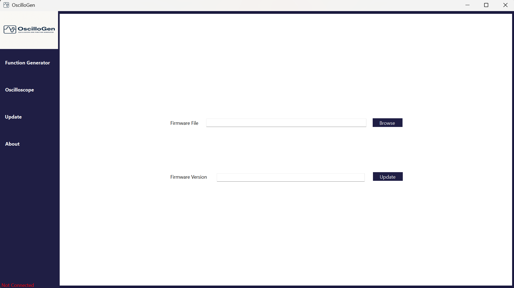
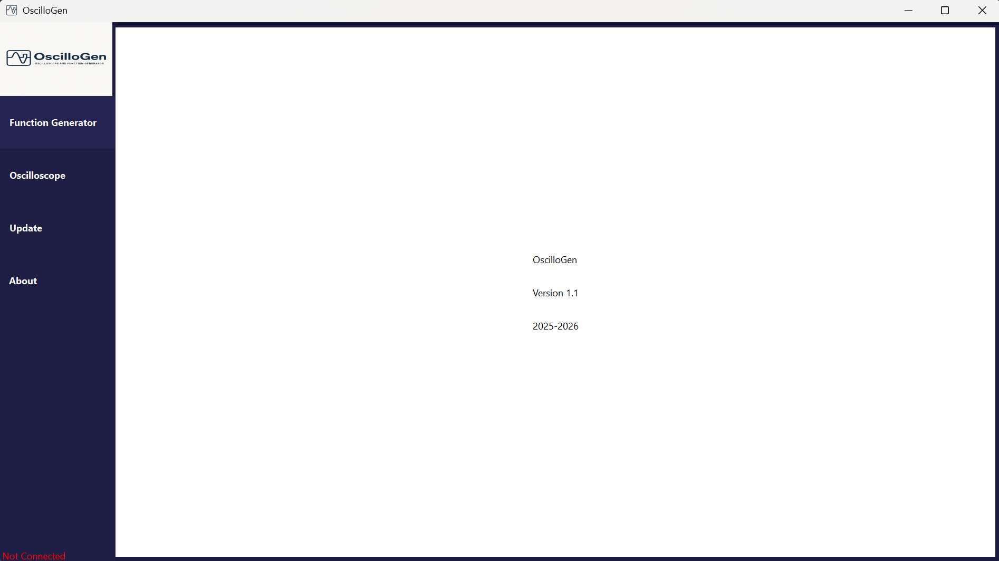
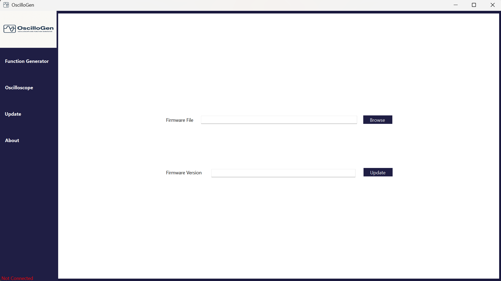
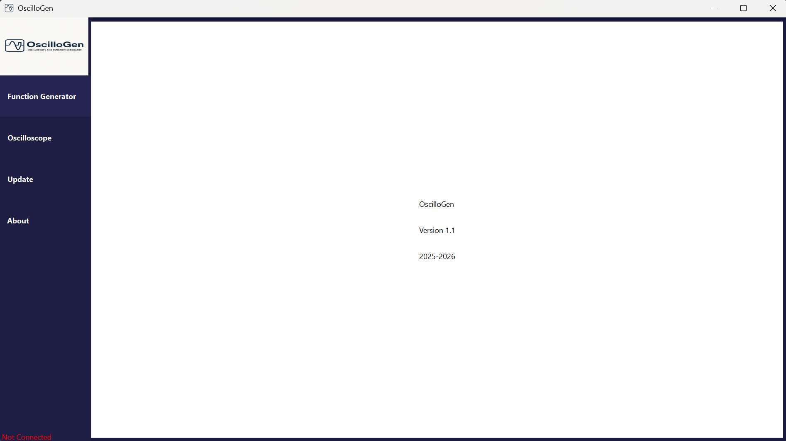

OscilloGen
Microcontroller Project: Developed a C/C++ firmware and a C# graphical interface for the design of an Oscilloscope with Function Generator functionality, based on an STM32 board that can be controlled by its interface.
- Implemented unit testing with GoogleTest (C++) and NUnit (C#).
- Acquired and generate signals via embedded ADC/DAC or external FPGA.
- Optimized processing by critical functions written in ARM Assembler.
- Used tools: STM32CubeIDE, Visual Studio Code, Git, CMake, GNU Toolchain.
- Implemented independent watchdog (IWDG) to prevent software crashes.
- Used microcontroller interfaces such as GPIO, DMA, Timers, and interrupts.
- Programed in bare-metal via direct writing in the microcontroller's registers.
- Implemented SPI, I2C, USART/UART, and USB protocols for external communication.
- Accelerated trigonometric calculations using CORDIC and the CMSIS-DSP library.
- Developed a user interface in C# with Windows Forms and with a modern design.
- Implemented a modular architecture of the PC application with multiple WinForms pages.
- Implemented a modular software architecture in object-oriented C++, with hardware abstraction.
- Implemented an interface for the oscilloscope, function generator, and firmware update.


 



Drone UAV
C++ Embedded Project: Developed embedded software for a drone (UAV) in modern C++, integrating advanced concepts of software architecture, real-time, communication and remote supervision.
- Wrote and run unit tests with Google Test.
- Generated build files with CMake, Make and the GNU Toolchain.
- Implemented a real-time system with asynchronous and multithreaded execution.
- Acquired and process multi-sensor data (altitude, speed, orientation, battery).
- Used direct access to hardware via Linux system interfaces: I2C, PWM, UART, files.
- Use C++ advanced concepts: Atomic, STL, Singleton, Template, Compile-Time Values, RAII.
- Implemented inter-threaded communication patterns: Observer, Message Queue, Singleton.
- Designed a modular software architecture in C++ with advanced object-oriented programming.
- Implemented remote communication with the drone via a TCP/IP-based client-server protocol.

F25 aircraft
C++ Aerospace Project: Designed an embedded avionics system linking the pilot's controls to the flight computer, using the C++ language and avionics communication protocols, to enable reliable control of the aircraft.
- Generated build files with CMake, Make and the GNU Toolchain.
- Documented the source code with Doxygen and perform version control on Git.
- Developed an HTML web interface for real-time order entry.
- Applied thread-safe methods to keep threads synchronized.
- Implemented multithreading in C++ to parallelize module processes (ARINC 653).
- Used ARINC 429 and AFDX communication protocols for transmission between modules.
- Displayed dynamically flight parameters (angle of attack, speed, altitude) to the pilot.
Artificial Intelligence Game Agent
Project AI: Designed an intelligent agent for a board game in Python, based on the Minimax algorithm, with alpha-beta pruning, custom heuristics and resource optimization. The goal was to compete against human players and other AI agents in a competitive environment.
- Implemented AI algorithms such as Minimax with alpha-beta pruning type A and B.
- Developed heuristics to improve strategic performance and points management.
- Collaborated in pairs with version control via Git for structured and collaborative development.
- Used advanced Python features: object-oriented programming, collections, understandings.
- Applied optimization techniques to reduce resource consumption and speed up response.

Automobile System
Java Embedded Project: Developed embedded software in Java for the control and supervision of a modern vehicle, integrating advanced concepts of software architecture, real-time processing and on-board data management.
- Designed a modular architecture with independent functional modules.
- Implemented a client-server (TCP/IP) model for telematics functionality.
- Used Java collections to efficiently manipulate complex data structures.
- Integrated a SQL database via JDBC to manage the vehicle's maintenance history.
- Implemented a real-time system with multithreaded programming to ensure responsiveness.
- Implemented API calls for GPS location and JSON data analysis with a JSON Parser.
- Implemented a robust exception handling mechanism to ensure system reliability.
- Implemented advanced file management (File I/O) for acquisition and link with sensors.
Neural Network on FPGA
C++/Scala project: Developed a multilayer neural network for the classification of handwritten digits using the MNIST dataset. The implementation is done in both C++ HLS (generating VHDL) and Scala Chisel (generating Verilog) for execution on FPGA (PYNQ).
- Used Vitis HLS and Xilinx Vivado tools with an FPGA board with an integrated ASIC.
- Wrote code in Scala Chisel to generate Verilog for hardware synthesis.
- Performed performance and resource utilization analysis between the two implementations.
- Developed optimized HLS C/C++ code, which is then converted to VHDL for a hardware implementation.
- Designed custom IPs with Vivado and ensure communication with ASIC via DMA.
- Performed a first validation of the algorithm in Python and C++ on a processor in software form.
- Applied artificial intelligence concepts, including multilayer neural networks (MLPs).
- Implemented the neural network on FPGAs and validate the results using a Jupyter notebook in Python.


Cross-compiled facial recognition on Linux
C++ cross-compilation project: Developed a facial recognition program via cross-compilation between an x86-based computer and an ARM-based microcontroller on Linux, using the C++ language on the VS Code IDE. The goal is to recognize one face among others.
- Documented the code with Doxygen and save it to Git/Bitbucket.
- Generated build files with CMake, make, and GNU Toolchaine.
- Used fork-exec mechanisms for parallel execution of programs.
- Enforced TCP/IP Sockets protocols for cross-compilation on Linux.
- Used the Linux command line (Bash and Tcsh) and implemented Linux device management.


F1 video game on ARM microcontroller
Microcontroller Project: Enhanced the T-Rex video game by integrating microcontroller concepts, ARM architecture, and assembler programming to make the game multiplayer with an IR sensor and an ultrasonic sensor.
- Created an advertising video showcasing the product.
- Applied serial communication protocols (UART, SPI, I2C).
- Wrote Unit Tests using Unity to verify the operation of the program.
- Collaborated as part of a team of three people for the design of the video game.
- Used microcontrollers with C and ARM assembly computer languages on Keil uVision5.
- Applied microcontroller knowledge with STM32Cube and data transfer (DMA, DAC, ADC).
- Configured various peripherals on STM32CubeMX, such as GPIOs, Timers, and Interrupts.

Qt Creator Graphics Library
C++ OOP GUI project: Developed a library with graphical user interface (GUI) by implementing the principles of C++ object-oriented programming, exception handling and Qt Creator to easily classify the different Pokémon according to their statistics.
- Used Visual Studio and Qt Creator.
- Collaborated in a two-person team.
- Wrote Unit Tests using Google Test to check the classes and functions of the program.
- Implemented the principles of the model-view-controller pattern on Qt Creator and OOP on C++.
- Used the concepts of encapsulation, inheritance, polymorphism, abstraction, and templates.
- Used the concepts of Operator Overload, Exception Handling, and Standard Template Library (STL).
Max-Cut solver on FPGA
HLS C++ Project: Solved the NP-difficult Max-Cut optimization problem on an FPGA using the algorithm of simulated annealing via the HLS tool in C++. Particular attention was paid to writing optimized C++ code in order to efficiently generate VHDL code for a hardware implementation on FPGA (PYNQ).
- Validated results on FPGA via a Jupyter Notebook in Python.
- Used Vitis HLS and Xilinx Vivado tools with an ASIC-integrated FPGA board.
- Checked the initial algorithm in Python and C++ on a processor (CPU) in software form.
- Applied optimization techniques from artificial intelligence, such as simulated annealing.
- Developed optimized C/C++ code, convertible to VHDL for logical gate implementation.
- Analyzed thoroughly performance differences and resources used across implementations.
- Implemented custom IPs with Vivado and ensure communication with ASIC via DMA.
Mastermind Game on FPGA
VHDL Project: Created an electronic version of the Mastermind game on an FPGA board using the VHDL hardware language with the VIVADO Xilinx environment and implementing the game on Digilent's Nexys Video development platform (Artix-7).
- Collaborated as part of a two-person team for game design.
- Managed the initialization and power-off of an OLED display and use ROM and RAM memories.
- Proceeded through the VHDL development stages (RTL Analysis, Synthesis, Implementation, Simulation).
- Verified VHDL codes by writing test benches and implement IPs and use logic analyzer.
- Implemented finite state machines (MSAs), anti-bounce circuits, synchronizers, and clock dividers.

RISC-V CPU Processor
Integrated Circuit Project: Designed a five-stage RISC-V processor using VHDL over Active-HDL and create mask drawings for route placement. The processor is designed to execute commands in the RISC-V assembly language.
- Collaborated in a two-person team.
- Created mask designs on Cadence's Virtuoso.
- Verified and simulate VHDL codes by writing test benches.
- Used a package file and group the signals together to keep the code clean.
- Implemented pipeline Fetch, Decode, Execute, Memory, Write Back with ALU, Adder, Shift_Register, etc.

Stocks & Investment Portfolio
C# API Project: Developed an investment portfolio program using the C# language with Visual Studio and .NET. This program allows a user to track a company's actions, authenticate to buy or sell shares, or verify information about a company with their personal API.
- Used REST API and read from a JSON file.
- Applied object-oriented programming and C# concepts.
- Used custom, public APIs to check the status of company actions.
- Made the program modular by using classes and methods on different files.
- Respected encapsulation by defining public and private classes to ensure system security.

Personal Finance Management
Python Data Base project: Developed a money tracking program using the Python language with object-oriented programming (OOP) and SQL. The program allows you to enter and record expenses and personal budget over a period of time, either in a CSV file or in a SQL database, depending on the user's preference.
- Used Exception Management concepts to ensure program fluidity.
- Made the program modular by using classes and definitions on different files.
- Performed read and write operations on a SQL database and CSV files.
- Used VS Code and PyCharm development environments and document code with Doxygen.
- Applied the concepts of the Python language and the principles of object-oriented programming.
Email Builder
Java project: Developed a program to manage e-mail addresses using the Java language on VS Code. This program allows a company to generate emails for their employees based on their jobs in the company and the employer to customize it.
- Generated strong and secure passwords using SecureRandom.
- Encapsulated sensitive information and management operations.
- Used string manipulation techniques to generate email addresses.
- Documented the project using Doxygen comments to improve readability and maintainability.
Smart lock with remote power transfer
Integrator Project 3: Designed a remotely powered smart lock using a microcontroller (C) and an electromagnetic induction circuit that allows the lock to be opened using a mobile phone and RFID, while powering the device without any physical contact.
- Carried out research and documentation of the project independently.
- Verified the project and the progress of the project under the supervision of an electrical engineer.
- Created schematic diagrams of the circuit and designed the project independently.
- Wrote an engineering technical report and presented the prototype in a professional manner.
- Adhered to the design steps of an engineering project and the timelines for each stage of the project./li>
Street Warfare (Third-Person Shooter)
Video Game Project: Designed a 6v6 multiplayer video game in third-person view on Unreal Engine 5, playable online or against artificial intelligence, implementing tactical shooter mechanics and an immersive environment.
- Created a game map with interactive elements and optimized level design.
- Developed an interactive menu with various game options.
- Integrated realistic characters via MetaHuman.
- Imported and synchronize animations with built-in sound effects.
- Integrated 3D models (meshes) of characters, weapons and scenery.
- Implemented gameplay logics using Blueprints and C++ under Unreal Engine.
- Performed successive iterations of the gameplay based on feedback from playtest sessions.


Security and penetration testing audit
Cybersecurity: Performed a security audit in a simulated environment using Kali Linux and various penetration testing tools. The project included identifying critical vulnerabilities, ethically exploiting vulnerabilities to demonstrate privilege escalation, and making concrete recommendations to strengthen the security of the system.
- Gained administrator access by elevation of privilege.
- Conducted a comprehensive security audit in a controlled, isolated environment.
- Used Kali Linux on a virtual machine with servers deployed via Docker.
- Wrote technical recommendations to address identified vulnerabilities.
- Detected critical vulnerabilities and use them ethically for demonstration purposes.
- Identified IP addresses, scan ports, and scan services using Netdiscover and Nmap.
- Exploited vulnerabilities and crack hashed passwords using Metasploit and Hashcat.
- Detected hidden directories and identify vulnerabilities in a WordPress site with DirBuster and WPScan.
Tic-Tac-Toe Video Game
Python GUI project: Developed the game Tic-Tac-Toe, played by two people, using the Python language with PyQt Designer on MS Windows. The goal is to use Python with a graphical interface to determine the winner of the game.
- Documented the code with Doxygen.
- Used VS Code development environments.
- Wrote a modular program using definitions.
- Used features of the PyQt Designer and apply the concepts of GUI design.

Qt Web Browser
Project in Python with PyQt5: Enhanced a web browser using Python and PyQt5 on Visual Studio to allow Internet browsing without the use of a graphical user interface (GUI).
- Used features of PyQt5.
- Applied concepts from the Python language.
- Added customization to the web browser.


Nature Travel website
Front-End Project: Developed a custom website using HTML, CSS and JavaScript on Visual Studio Code with Live Server, with the goal of creating an interactive and aesthetically pleasing website to promote outdoor activities.
- Applied concepts from HTML5, Javascript, CSS.
- Put interactive website development into practice.
- Created structured and easily accessible documentation with Doxygen.
Matlab and Simulink
Matlab and Simulink: Repeatedly used Matlab and Simulink tools to simulate system behavior. Used these programs to simulate closed-loop feedback systems, as well as simulate the response of telecommunication systems and analyze signals.
- Performed matrix calculations using Matlab.
- Wrote function files and use Matlab functions.
- Wrote and simulate transfer functions in Simulink and Matlab.
- Created simulation tables in Simulink and calculation data in Matlab.
- Generated simulation graphs in Simulink and calculation data graphs in Matlab.
Power Control system
Integrator Project 1: Designed a control circuit and a monitoring circuit on the Logicim software using logic circuits to regulate the power of electrical devices and verify the power received.
- Planned and wrote an engineering technical report for the project.
- Collaborated in a team of 5 people to design and present the project.
- Diagrammed and designed a power control system within budget.
- Developed schematic diagrams of an electrical frequency control system.
- Used PSOC Creator to visualize logic circuits on a microcontroller and electrical circuit.
Home automation system for modulating digital signals
Integrator Project 2: Designed a home automation system using electronic circuits to allow the management of several household devices via a single communication wire.
- Participated in the verification of calculations and respect the constraints of the mandate.
- Used instruments such as oscilloscope, multimeter, and DC/AC function generator.
- Applied knowledge of analog filters, modulator, demodulator, and frequency spectrum.
- Performed calculations on analog electrical and electronic circuits and verify them on LTSPICE.
- Collaborated as part of a team of three people to design and write a technical report.

Autodesk AutoCAD Electrical
Computer-Aided Design: Drawing electrical and electronic circuits using AutoCAD to diagram circuits.
- Used drawing and editing commands.
- Understood project and drawing settings.
- Diagramed a circuit of a three-phase motor.
- Carried out a circuit diagram of an AC/DC converter.
- Familiarized with electrical symbols, number wires, and label components.


Electrotechnics
Electrical Energy: Checked circuits, distribution, and transmission of Electrical Energy by performing calculations and simulations of voltage, current, power for single-phase and three-phase circuits to ensure the proper functioning of electrical devices.
- Performed calculations and simulation on EMTP-RV software.
- Calculated apparent powers, power factor and compensating capacitor.
- Used devices such as transformers, three-phase asynchronous motors (MAS).
- Simulated control and regulation of closed-loop control systems such as PIDs on Simulink.
- Took practical or software-based measurements of electrical circuits and document them in a report.

Building Electricity
Electricity: Applied the 2018 Quebec-Electricity Construction Code to perform electrical calculations, acquired knowledge of the main electrical distribution components, and demonstrated a commitment to safety and the environment.
- Performed an electrical inspection of a building space in accordance with LSST and RSST standards.
- Checked the wiring of standard and differential electrical outlets using an outlet tester.
- Determined the appropriate loads, conductor ampings, and ratings according to the code.
- Determined different methods and materials to ensure an efficient ground connection.
- Determined standards for clearances, voltage drops, and correction factors.